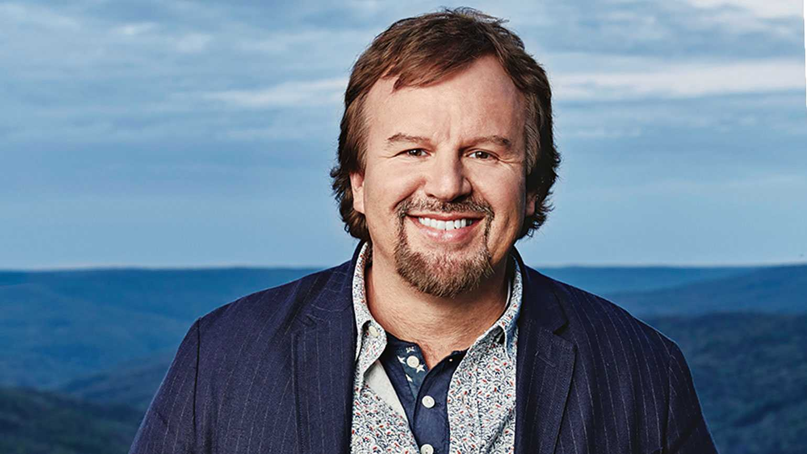

Gospel Music is my heartbeat especialy when doing my busines of coding.
There are more than 20 songs that casting crown has produce, here are part of it
John Mark Hall (born September 14, 1969) is the lead vocalist for the Georgia-based contemporary Christian music group Casting Crowns, a seven-member group composed of worship leaders. Hall is also youth pastor at Eagle's Landing First Baptist Church in McDonough
Juan Devevo - Guitars/Vocals (birthday September 24, 1975) Hometown - Jacksonvile.

Casting Crowns is a contemporary Christian and Christian rock band started in 1999 by youth p astor Mark Hall, who serves as the band's lead vocalist, as part of a youth group at First Baptist Church in Downtown Daytona Beach, Florida. They later moved to Stockbridge, Georgia, and more members joined The band is originally from Daytona Beach, Florida but relocated to Eagle's Landing First Baptist Church in McDonough, Georgia in 2001, where they recruited Megan Garrett (piano/vocals), Andy Williams (drums), and Chris Huffman (bass guitar) as members. One of their independent records was discovered by Mark A..